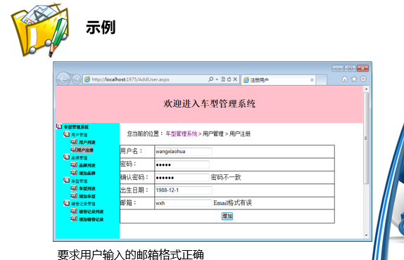
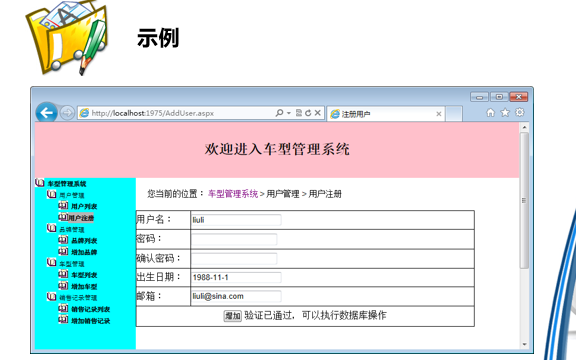
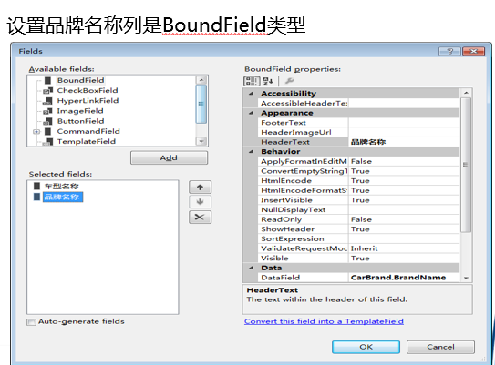
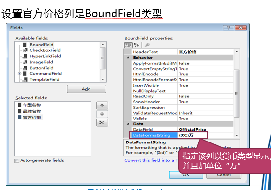

- ASP.NET知识点
ASP.NET知识点
第一章 ASP.NET简介
- ASP.NET有两种编码方式: 代码内嵌和代码后置
- 代码内嵌
- 代码后置
第二章 ASP.NET中的控件
1. 控件分类
- HTML控件
- 比如
<input type="text" />是一个文本框标签，在ASP.NET中，这种标签称作HTML控件。 - 在客户端使用JavaScript脚本语言进行控制。
- HTML控件不消耗服务器资源，如果仅仅强调客户端的应用，那么用HTML控件即可。
- 比如
- HTML服务器控件
- 通过在HTML标签中添加“runat=”server””属性，将HTML控件转换为HTML服务器控件
- 在ASP.NET执行的过程中，ASP.NET将创建包含“runat=”server””属性的元素实例，如果需要在后置代码中使用此实例，则需要为控件分配id属性。
- Web服务器控件
- 微软重新定义的一套控件。
- Web服务器控件提供统一的编程模型、包含方法以及与之相关的事件处理程序，并且这些代码都在服务器端执行。
- Web服务器控件的标签都是以“asp:”开头，称为标记前缀，后面是控件类型。
- 服务器控件
- HTML服务器控件和Web服务器控件都是在服务器端运行，它们通过设置id属性，在服务器端用id来自动捕获它们。 - HTML服务器控件和Web服务器控件对应着类不同，如Button，所以HTML服务器控件和Web服务器控件的属性、方法及事件并不相同 - 
- 不管什么控件，最终会生成HTML代码，由浏览器根据HTML代码解析后呈现
2. 页面回发
- 单击服务器控件Button时，引起了页面的回发。回发会触发Page_Load事件与按钮单击等事件。
- 页面回发的本质是提交表单。
3. 常用控件
1. Label控件
Label控件是ASP.NET中最常用的控件之一，用于将文本内容显示在网页上，支持以编程方式动态修改显示的内容。
成员名称 成员类型 说明 Text 属性 获取或者设置控件的文本内容 AccessKey 属性 导航到其他控件的快捷键 AssociatedControlID 属性 使用快捷键导航的目的控件ID Visible 属性 布尔值，设置控件是否可见
2. TextBox控件
使用TextBox控件收集用户输入的信息或者显示文本。它可以配置为单行、多行或者密码类型。
成员名称 成员类型 说明 AutoPostBack 属性 布尔值，规定当内容改变时，是否回传到服务器。默认是 false Text 属性 获取或者设置控件的文本内容 TextMode 属性 设置 TextBox的模式（单行、多行或密码等） ReadOnly 属性 布尔值，设置能否改变文本框中的文本 MaxLength 属性 在 TextBox 中所允许的最大字符数 Rows 属性 设置TextBox 的高度（仅在 TextMode=”Multiline” 时使用） Columns 属性 设置TextBox 的宽度 OnTextChanged 事件 当 TextBox 中的文本被更改时所触发的事件
3. Image控件
Image控件用于在网页上呈现图片，最终生成
元素，支持以编程的方式管理显示的图片。
成员名称 类型 说明 ImageUrl 属性 显示的图片所在的URL地址 ToolTip 属性 当鼠标指向图片时的说明性文字 AlternateText 属性 图像不可用时取代图像显示的文字 

4. HyperLink控件
HyperLink控件用于在网页上以图片或文本方式呈现一个链接。
成员名称 成员类型 说明 Text 属性 显示链接的文本 ImageUrl 属性 显示链接的图片所在的URL地址 NavigateUrl 属性 链接的目的页面的URL地址 ToolTip 属性 当鼠标指向链接时的说明性文字
RadioButton控件用于在页面创建一个单选项，可以将多个单选项分为一组来创建多个互斥的选项。
成员名称 成员类型 说明 Text 属性 获取或者设置单选按钮的文本 TextAlign 属性 设置文本和单选按钮的对齐方式 GroupName 属性 分组的名称 Checked 属性 获取或者设置是否选中控件 OnCheckedChanged 事件 选择状态改变时触发
6. CheckBox控件
CheckBox控件用来在页面中创建复选框。
成员名称 成员类型 说明 Text 属性 获取或者设置单选按钮的文本 TextAlign 属性 设置文本和单选按钮的对齐方式 Checked 属性 获取或者设置是否选中控件 OnCheckedChanged 事件 选择状态改变时触发
7. 列表控件
列表控件主要用于显示若干个选项，让用户选择其中一项或多项，具体过程取决于列表控件允许单选还是多项。
成员名称 类型 说明 AutoPostBack 属性 获取或设置一个值，当更改选项时，是否自动产生向服务器的回发 Items 属性 获取控件列表项的集合 SelectedValue 属性 获取列表控件中选定项的值或设置列表控件中包含指定值的项 Text 属性 获取或设置控件的SelectedValue属性 SelectedItem 属性 获取列表控件中索引最小的选定项 SelectedIndex 属性 获取或设置控件中选定项的最低序号索引 DataSource 属性 获取或设置对象，列表控件从该对象中检索其数据项列表 DataTextField 属性 获取或设置为列表项提供文本内容的数据源字段 DataValueField 属性 获取或设置为列表项提供值的数据源字段 DataBind 方法 将数据源绑定到控件及其所有子控件中 在ASP.NET中，列表控件包括DropDownList控件、ListBox控件、RadioButtonList控件和CheckBoxList控件。
RadioButtonList与CheckBoxList的常用成员如下所示。
成员名称 成员类型 说明 TextAlign 属性 文字与控件的对齐方式 RepeatDirection 属性 列表显示时排列的方向 RepeatColumns 属性 列表显示的列数
- HiddenField控件是ASP.NET表单类控件，它没有用户界面，包含一个常用属性Value。
- HiddenField控件会生成“type=’hidden’”的input元素
- 在实际项目中，为了避免页面回发时使数据恢复初始化的状态，可以使用HiddenField控件来保存这些数据。
4. 服务器控件的客户端事件处理
- 触发基于AutoPostback属性设置为true的服务器控件的事件会导致页面的回发，以便服务器端执行处理。
- 但回发会导致整个页面的频繁刷新，降低客户的体验度，也会增加服务器的负担，所以可以将一些工作借助客户端事件进行处理。
- 客户端事件在浏览器中引发后立即捕获，由浏览器中的javascript脚本负责处理；
- 在ASP.NET中，服务器控件借助Attributes属性来支持客户端的各种事件。
- Attributes属性是在服务器端为服务器控件添加客户端处理代码的解决方案。
5. 总结
在HTML标签中添加“runat=”server””的属性，把HTML控件转化为HTML服务器控件。
Web服务器控件不是由HTML元素直接转换而来的，而是微软重新定义的一套抽象控件。
基本的Web服务器控件有Label、TextBox、Image、HyperLink、RadioButton、CheckBox、- DropDownList、ListBox、RadioButtonList、CheckBoxList、HiddenField等。
页面的回发会形成了一个新请求，服务器利用隐藏域保存服务器控件的状态和属性，在回传到服务器处理时，服务器又会将它们还原成控件的状态数据。
Attributes属性是在服务器端为服务器控件添加客户端处理代码的解决方案。
第三章 ASP.NET系统对象与状态管理
1. 系统对象的概念
在ASP.NET页面中包含一系列类，在页面中可以直接使用，我们称之为系统对象。
系统对象不需要编写代码进行初始化，其初始化时是在ASP.NET执行期间由系统完成的。
系统对象 类型 Context System.Web.HttpContext Page System.Web.UI.Page Request System.Web.HttpRequest Response System.Web.HttpResponse Server System.Web.HttpServerUtility Application System.Web.HttpApplicationState Session System.Web.SessionState.HttpSessionState
1. Page对象
ASP.NET页面继承System.Web.UI.Page类
每一个ASP.NET的页面对应一个页面类，所以每个ASP.NET页面在运行时就是一个Page对象。
用户访问页面时，ASP.NET会编译.aspx文件和.cs文件，合并生成页面类。
@Page指令
aspx文件源视图，第一行代码如下：
1
2
3
4
5
6<%@ Page Language="C#" AutoEventWireup="true" CodeFile="Default.aspx.cs" Inherits="_Default"
//Laguage：页面中代码的语言，必须是.NET Framework支持的语言。
//AutoEventWireup：设置页面是否自动调用网页事件，默认为true。
//CodeFile:指定代码后置的文件名，该后置代码与页面是局部关系。
//Inherits：用于指定后置代码中页面类的名称。
%>
Page对象的常用成员
成员名称 成员类型 说明 IsPostBack 属性 页面是否为回发状态 ClientScript 属性 管理客户端的脚本代码引入 Context 属性 Context系统对象的引用 Response 属性 Response系统对象的引用 Request 属性 Request系统对象的引用 Server 属性 Server系统对象的引用 Application 属性 Application系统对象的引用 Session 属性 Session系统对象的引用 FindControl 方法 查找指定名称的控件 Load 事件 在页面加载时触发 - Page对象的IsPostBack属性
- IsPostBack属性用于区分页面是第一次加载还是因客户端回发而引起的加载。
- 当系统检测到页面处于回发状态时，会自动将IsPostBacks属性设为True。
- Page对象的IsPostBack属性
2. Response对象
Response对象提供对页面输出流的访问，用于ASP.NET的输出。
成员名称 成员类型 说明 Write 方法 将指定的内容输出至页面 Redirect 方法 将页面重定向到另一页面 ContentType 属性 输出流的MIME类型，默认是 “text/html” WriteFile 方法 将指定的文件写入输出流 QueryString 属性 HTTP协议GET请求发送的数据集合 Form 属性 HTTP协议POST请求发送的数据集合 ServerVariables 属性 本次请求的服务器端变量集合 Params 属性 QueryString Form ServerVariables和Cookies项的组合集合该方法需要在最大的范围寻找匹配字段 -
1
2
3
4
5
6
7
8
9
10
11protected void Page_Load(object sender, EventArgs e)
{
if (!IsPostBack)
{
string name = Request.Form["txtName"];
string pwd = Request.Form["txtPwd"];
string tel = Request.Form["txtTelphone"];
Response.Write("注册信息如下：<br/>");
Response.Write("用户名：" + name + "<br/>密码是：" + pwd + "<br/>联系方式是：" + tel);
}
}
3. Server对象
Server对象封装了一些Web服务器相关的常用方法。
成员名称 说明 UrlEncode 对URL地址进行编码，对于URL需要传输含有“#”、“&”等特殊字符的参数时，需要进行编码，否则后面的内容不会被识别 UrlDecode 此方法与UrlEncode方法相反，对URL地址进行解码 HtmlEncode 编码字符串，使其在浏览器中的的显示与原字符串一致。如希望输出“<br/>”，又不想在浏览器中显示换行，则需要使用该方法 HtmlDecode 与HtmlEncode方法相反，对已编码内容解码 MapPath 方法的参数是虚拟路径，可返回该路径在物理磁盘中的准确位置。此方法在Web开发过程中使用频率比较高，一般实现文件读写都需要该方法 Execute 在当前页面执行参数指定的页面，执行完成后继续执行本页面 Transfer 参数指定的页面处理完成后，页面执行就结束，不像Execute那样还要返回控制权给先前的页面 UrlEncode与UrlDecode方法
UrlEncode方法一般用于可能含有中文或特殊字符的环境中，有时也适用于对字符串进行简单加密。
调用UrlDecode方法，将编码进行解码操作，获得编码前的字符串。
-
1
2
3
4
5
6
7protected void btnSearch_Click(object sender, EventArgs e)
{
if (!string.IsNullOrEmpty(txtBook.Text))
{
Response.Redirect("BookList.aspx?name=" +Server.UrlEncode(txtBook.Text));
}
}
HtmlEncode与HtmlDecode方法
- HtmlEncode主要应用于使一个字符串以原始方式呈现在页面中时，被浏览器识别为标签的字符转换为显示的字符。
MapPath方法
Server对象的MapPath方法用于根据网站的虚拟路径获取物理磁盘上的真实路径。
-
1
2
3
4
5
6
7
8
9
10
11
12protected void btnSave_Click(object sender, EventArgs e)
{
if(!string.IsNullOrEmpty(txtContent.Text))
{
string filePath = Server.MapPath("~/info.txt");
FileStream fs = new FileStream(filePath, FileMode.OpenOrCreate);
StreamWriter sw = new StreamWriter(fs);
sw.Write(txtContent.Text);
sw.Close();
fs.Close();
}
}
Execute和Transfer方法
- Transfer用于终止当前页面程序的处理从而执行新的页面。
- Execute用于在当前请求上下文中执行一个新的页面。
- Transfer会终止当前页面的处理，执行新页面的结果将替代当前页面；而Execute将执行一个新的页面，新页面的结果与当前页面的结果合并。
- Response.Redirect用于通知浏览器请求新页面，浏览器收到后会转向对新页面的请求，地址栏中显示新的请求地址。
- Transfer和Execute方法则是在当前请求中执行新页面，浏览器并不知情，地址栏中仍然显示原来请求的地址。
4. ASP.NET中的状态管理
- ASP.NET应用程序的访问是基于HTTP协议的，而HTTP协议在本质上是无状态的。
- 无状态的协议导致对页面的每个请求都视为新请求，来自一个请求的信息对下一个请求不可用。
- 为了解决无状态的问题，ASP.NET提供了大量的功能，用于在请求与请求之间、页面与页面之间甚至在整个应用程序内保留数据。
- 状态管理的技术包括隐藏域、Cookie、查询字符串、Application对象、Session对象等。
Cookie是指小量信息，是服务器通知浏览器保存的一段文本信息，浏览器会将其保存在本地硬盘上。
对网站进行访问时，浏览器自动将从该网站保存下来的Cookies附加在请求中提交给服务器端。
每一个Cookie对象都保存在Cookies集合对象中，所以访问Cookie的方式如同访问集合中的元素。
-
1
2
3
4Response.Cookies["UserName"].Value = txtName.Text;
Response.Cookies["UserName"].Expires = DateTime.Now.AddHours(2);
Response.Cookies["UserPwd"].Value = txtPwd.Text;
lblName.Text = "Cookies中保存的名称为UserName的Cookie值为：" + Request.Cookies["UserName"].Value; 在客户端写入Cookies具有限制条件
- ①大小限制。
- ①客户端可能关闭Cookie 。
6. Session对象
和Cookies一样，Session也是集合，同样可以使用键值对的方式进行访问，但是Cookie是保存在客户端的硬盘中，而Session是保存在服务器端的内存中。
成员名称 成员类型 说明 SessionID 属性 获取会话的唯一标识符 Timeout 属性 设置用户超时的时间，单位为分钟。
在该段时间内，用户即使没有任何操作，用户状态也不会被清除。
注意，此处的设置是针对服务器清除Session的时间而言的，
因为如果一段时间内没有操作，服务器是无法知道用户是否在线，
所以以超时间为限。而客户端有自己的处理机制，
不同的浏览器也不尽相同，一般关闭窗口就会造成Session丢失。Clear 方法 从会话状态集合中移除所有的键值对。 Abandon 方法 取消当前会话
7. Application对象
- Application对象是应用程序级的对象，用来在所有用户间共享数据，并可以在Web应用程序运行期间持久地保存数据，除非停止Web服务器。
- Application和Session一样，可以使用键值对的方式进行数据的访问。
- 修改Application对象中的数据时，必须先使用Lock方法锁定访问再修改，修改完毕后立即使用UnLock方法解除访问锁定。
8. 状态管理技术的区别
- 从应用范围方面来说，各种状态管理技术的主要区别如下
- 隐藏域用于同一个页面回发时保留状态，一般用于保存单个页面中需要保留的简单值。
- 查询字符串一般用于在页与页之间保持状态，即将简单值从一个页面传递到另一个页面。
- Session对象用于在一个会话中保持状态。
- Cookie用于在一个客户端下保持状态。
- Application在整个应用程序间保持状态。
- 从存储方式方面来说，各种状态管理技术的主要区别如下：
- 隐藏域存储在呈现给客户端的页面中。
- 查询字符串将值存储在URL地址中。
- Session对象将数据存储在服务器中，将SessionID属性的值存储在客户端
- Cookie将数据存储在客户端。
- Application将数据存储在服务器的内存中。
2. 总结
常用的系统对象包括Context、Page、Response、Request、Server、Cookie、Session和Application。
解决无状态的技术包括隐藏域、Cookie、查询字符串、Session对象、Application对象等。
Response对象提供对输出流的访问，Request对象提供对输入流的访问，Server对象提供了常用工具方法。
Cookies以文件形式存储在客户端的机器上，可以使用Cookies长期保存与用户相关的少量信息。
Session对象存储会话级别数据，Application对象存储应用程序级别数据。
第四章 基于三层架构搭建系统
1. 为什么需要分层架构
2. 三层结构的优势
- 项目需求往往随市场的变化而发生变化，三层架构通过将各个功能模块分离，提高了项目的可维护性和代码的可重用性。
- 三层结构将各功能模块分离，有利于协作开发。
- eg: 基于三层架构的优势，采用三层架构的设计方式，搭建车型系统架构。
3. 模型层
三层架构中需要传递数据，如需要把数据从数据访问层传递到业务逻辑层，再从业务逻辑层传递到表示层。
模型层有时也称为实体层，和三层紧密相关，主要是作为层与层之间数据传递的载体。
模型层包含所有与数据库中的表相对应的实体类。
模型层提供了一个标准、规范，三层之间的数据传递就是通过传输实体对象或者实体对象集合来达到目的的。
3-1 创建模型层
创建解决方案“CarSYS”。
在解决方案中，添加模型层对应的项目。
在类库项目中，添加两个类，类名分别为“Brand.cs”和“Car.cs”，在类中分别添加字段和所对应的属性。
代码:
1
2
3
4
5
6
7
8
9
10public class Brand
{
private int brandId;
public int BrandId //品牌编号
{
get { return brandId; }
set { brandId = value; }
}
//其他代码省略……
}
4. 数据访问层
- 数据访问层封装了所有与数据库交互的操作。
- 数据访问层针对每个数据表提供单纯的增加、查询、修改和删除的操作，不做业务逻辑的判断。
4-1 创建数据访问层
在解决方案中，添加“CarSYSDAL”类库项目 。
在类库项目中添加类。针对模型层中的每一个类，数据访问层有一个对应的数据访问类，如Car类对应着CarService类。
1
2
3
4
5
6
7
8
9public class CarService
{
public void AddCar(Car car){ }
public bool DeleteCarById(int id){ }
public bool ModifyCar(Car car){ }
public List<Car> GetCars() { }
public Car GetCarById(int id){ }
……
}
4-2 添加依赖
在数据访问层中使用模型层的Car类，通过“添加项目引用”实现数据访问层调用模型层。
示例:
1
2
3
4
5
6
7
8
9
10
11
12
13
14
15
16
17
18
19
20
21
22
23
24
25
26
27
28
29
30
31
32
33
34
35
36
37
38
39
40
41public void AddCar(Car car)
{
string constr = "server=.;uid=sa;pwd=1;database=CarSYS";
string sql = "insert into car values('"+car.CarName+"',"+car.CarBrand.BrandId+",'"+car.Picture+"',"+car.OfficialPrice+","+car.Click+")";
SqlConnection con = new SqlConnection(constr);
try
{
con.Open();
SqlCommand cmd = new SqlCommand(sql, con);
cmd.ExecuteNonQuery();
sql = "select @@IDENTITY
cmd.CommandText=sql;
car.CarId=Convert.ToInt32(cmd.ExecuteScalar());
}
……
}
}
public void AddCar(Car car)
{
……
try
{
……
cmd.CommandType = CommandType.StoredProcedure;//命令类型是存储过程
cmd.CommandText = "usp_AddCar";//usp_AddCar是数据库中已经编译成功的存储过程
SqlParameter[] para = new SqlParameter[]{//SqlParameter对象数组，保存存储过程中的参数
new SqlParameter("@CarName",car.CarName),
new SqlParameter("@BrandId",car.CarBrand.BrandId),
new SqlParameter("@Picture",car.Picture),
……
};
para[5].Direction = ParameterDirection.Output; //设置最后一个参数是输出类型的
foreach (SqlParameter eachPa in para)
{
cmd.Parameters.Add(eachPa);
}
cmd.ExecuteNonQuery();
car.CarId = Convert.ToInt32(cmd.Parameters["@carId"].Value);//获取输出参数的值
}
……
}
5. 业务逻辑层
业务逻辑层是表示层与数据访问层的桥梁，负责业务处理和数据传递。
业务逻辑层的方法一般与实际需求相关，如用户注册，事实上，用户注册不仅仅是添加一条记录那么简单，它还包含了验证用户名是否已经存在等业务逻辑。
5-1 创建业务逻辑层
在解决方案中，添加“CarSYSBLL”类库项目 。
在类库项目中添加类。业务逻辑层中的类也是与模型层中的类相对应。
1
2
3
4
5
6
7
8
9public class CarManager
{
CarService cs = new CarService();
public void AddCar(Car car)
{
……
}
}
}
5-2 添加依赖
业务逻辑层的方法不能直接访问数据库，业务逻辑层要添加数据访问层和模型层的引用。
示例:
1
2
3
4
5
6
7
8
9
10
11
12
13
14
15public class CarManager
{
CarService cs = new CarService();
public void AddCar(Car car)
{
try
{
cs.AddCar(car);
}
catch (Exception ex)
{
throw ex;
}
}
}
6. 表示层
表示层负责内容的展现和与用户的交互。
表示层给予用户直接的体验，可以说前面的几层都是基础，表示层是最终的应用。
在ASP.NET中，表示层就是整个Web站点，即通过页面来实现数据的展示和与用户的交互。
6-1 创建表示层
在解决方案中添加“CarSYSWeb网站。
表示层的主要内容就是控件+事件。
6-2 添加依赖
- 在表示层中，需要添加对业务逻辑层和模型层的引用。
7. 目录结构
在解决方案中，创建了与模型层、数据访问层、业务逻辑层和表示层对应的四个项目。
通过引用完成了各个层之间的依赖关系，并在各个项目中，添加了相关的代码，最终完成了增加车型的功能。
8. 总结
三层主要包括数据访问层、业务逻辑层和表示层。
模型层有时也称为实体层，和三层紧密相关，主要是作为层与层之间数据传递的载体。
数据访问层针对每个数据表提供单纯的增加、查询、修改和删除的操作，不做业务逻辑的判断。
业务逻辑层是表示层与数据访问层的桥梁，负责业务处理和数据传递。该部分的方法一般与实际需求相关。
表示层负责内容的展现和与用户的交互。它给予用户直接的体验，可以说数据访问层、业务逻辑层是基础，表示层是最终的应用。
数据访问层、模型层和业务逻辑层对应的项目是类库，生成的是dll程序集。
通过添加引用，建立各个层之间的依赖关系。
第五章 搭建风格统一的Web站点
1. 母版页
各个页面存在一些相同的部分，比较常见的有页面头部、底部、导航菜单等。
ASP.NET提供了母版页技术来提取各个页面中相同的内容，各个页面只需要编写各自的内容，页面和母版页合成形成了最后的页面。
2. 母版页的优点
有利于站点修改和维护，提高开发人员的开发效率。
母版页的页面元素丰富。
有利于实现页面布局。
提供一种便于利用的对象模型。
3. 创建母版页
打开解决方案“CarSYS.sln”
在解决方案资源管理器窗口中，右键网站项目，在右键菜单中选择“添加” → “添加新项” → “母版页。
3-1 母版页的源文件

3-2 普通页面与母版页的区别
| 区别 | 普通页面 | 母版页 |
|---|---|---|
| 扩展名 | aspx | master |
| 可访问性 | 可直接在浏览器中访问 | 不可以直接在浏览器中访问 |
| 页面指令 | Page | Master |
| ContentPlaceHolder控件 | 不可使用 | 可使用 |
4. 创建内容页
母版页是页面的框架，还需要有内容页支撑页面内容。
创建内容页的操作与创建普通页面类似， “添加新项”à “Web窗体” à勾选“选择母版页”的复选框。
4-1 新创建的内容页代码
4-2 将现有页面改为内容页
- 在@Page指令中设置MasterPageFile属性和Title属性
2 去除多余的html标签
去除form标签
创建<asp:Content>标签，指定对应的ContentPlaceHolderID,并放入内容
5. 站点地图
在构建大型网站时，管理网站的栏目及所有内容的链接是一项十分复杂的工作。
ASP.NET提供了专门的站点导航功能，将网站中所有页面链接以XML文件的方式集中存储在某个位置。
集中存储所有页面链接的文件称为站点地图文件，命名为“Web.sitemap”。
在网站中，添加站点地图文件，打开“添加新项”窗口，选择“站点地图”。
示例
1
2
3
4
5
6
7
8
9
10
<siteMap xmlns="http://schemas.microsoft.com/AspNet/SiteMap-File-1.0" >
<siteMapNode url="~\Default.aspx" title="车型管理系统" description="管理员控制系统">
<siteMapNode url="" title="用户管理" description="" >
<siteMapNode url="~\UsersList.aspx" title="用户列表" description="" />
<siteMapNode url="~\AddUser.aspx" title="用户注册" description="" />
</siteMapNode>
……
</siteMapNode>
</siteMap>
6. TreeView控件
TreeView控件通过树状方式显示站点地图中的节点，实现站点导航功能。
使用TreeView控件的步骤
在站点中添加“Web.sitemap”文件
从工具箱的数据栏中拖入“SiteMapDataSource”控件
从工具箱的导航栏中拖入“TreeView”控件，并设置它的数据源即“DataSourceID”属性为拖入的“SiteMapDataSource”控件的ID
1
2
3
4<div id="menu">
<asp:SiteMapDataSource ID="SiteMapDataSource1" runat="server" />
<asp:TreeView ID="tvMenu" runat="server" DataSourceID="SiteMapDataSource1"></asp:TreeView>
</div>
7. SiteMapPath
SiteMapPath控件也是常用的导航控件，一般又称为面包屑导航，它将在页面上显示一个导航路径，为用户显示当前页的位置以及返回主页的路径链接。
使用SiteMapPath控件的步骤
在站点中添加站点地图文件
在页面中拖入SiteMapPath控件
1
2
3
4
5
6<div id="cph">
<p style="font-size:14px; padding:20px">您当前的位置：
<asp:SiteMapPath ID="SiteMapPath1" runat="server"></asp:SiteMapPath></p>
<asp:ContentPlaceHolder id="ContentPlaceHolder1" runat="server">
</asp:ContentPlaceHolder>
</div>
8. 总结
使用母版页，可以为ASP.NET应用程序页面创建一个通用的外观
母版页可以说是页面的框架，还需要有内容页支撑页面内容创建内容页时，需要勾选“选择母版页”的复选框。
ASP.NET站点导航功能将链接到网站上所有的页面以XML文件的方式集中存储在站点地图文件中，通过SiteMapDataSource控件向页面提供导航数据来源。
TreeView控件以树状方式提供导航，SiteMapPath提供面包屑导航。
第六章 验证控件和上传控件
1. 数据验证控件
为了避免异常，在把数据保存到数据库之前，有必要通过技术手段，对有格式要求的数据进行验证。
ASP.NET提供了一系列验证控件，以满足各种格式的验证。
验证控件主要包括5种验证控件和1个汇总控件。
控件名称 说明 RequiredFieldValidator 非空格式验证 RangeValidator 范围验证控件 CompareValidator 比较验证控件 RegularExpressionValidator 正则表达式验证控件 CustomValidator 自定义验证控件 ValidationSummary 验证信息汇总显示控件 验证控件首先检查客户端的脚本是否可用。如果可用，将优先使用客户端的脚本进行验证。在客户端验证通过后，页面才提交给服务器，从而减少了对服务器请求的次数，提高了程序的工作效率。
为了确保程序的安全性，在服务器端仍会进行再次验证，从而避免恶意用户绕过客户端向服务器端发送非法数据。
程序会在数据验证控件的验证没有通过时，显示设定的错误信息。
1. RequiredFieldValidator
RequiredFieldValidator控件是最常用的验证控件之一，用于验证必须填写的控件。
在验证的目标控件的输入内容为空时显示错误信息，常常和其他验证控件一起实现有效性验证。
属性 说明 ControlToValidate 要验证的控件的ID Text 出错时的提示 ErrorMessage 提交给汇总控件的错误信息。如果Text属性为空，则出错时将显示该信息。 Display 错误提示文本的显示方式。取值为Static时，无论是否有错误都占据位置，不显示错误时为空白，影响后面内容的位置；取值为Dynamic时，有错误时显示，无错误时不显示且后面的元素占据其位置；取值为None，不管是否存在错误，都不显示错误信息文本
1 | <asp:TextBox ID="txtName" runat="server"></asp:TextBox> |
2. RangeValidator
RangeValidator控件用于范围检查，常验证输入的值是否在指定的范围之内。
RangeValidator控件会将目标控件中的值转换成Type指定的类型，然后再查看是否在MinimumValue和MaxinumValue属性指定的范围之内。
Type属性支持的类型:
Type属性值 说明 String 按字符串比较 Integer 按整型数据比较 Double 按double双精度浮点数类型比较 Date 按日期比较 Currency 按货币方式比较 RangeValidator控件常用于整型或日期类型的比较。
Type默认值是String,如果按照字符串进行位比较，出现的结果可能与预期完全不同，所以，需要特别注意设置Type属性。
RangeValidator控件必须在目标控件中有输入值时才进行验证，否则验证控件不会被触发。其他验证控件同样不能在目标控件中输入为空时触发。
目标控件中的值可以与MinimumValue和MaxinumValue属性的值相等。
-
1
2
3<asp:TextBox ID="txtBornDate" runat="server" ></asp:TextBox>
<asp:RequiredFieldValidator ID="RequiredFieldValidator4" runat="server" ControlToValidate="txtBornDate" Display="Dynamic" ErrorMessage="出生日期必填" Text="*"></asp:RequiredFieldValidator>
<asp:RangeValidator ID="RangeValidator1" runat="server" ErrorMessage="出生日期在1966-1-1到1997-12-31之间" MaximumValue="1997-12-31" MinimumValue="1966-1-1" ControlToValidate="txtBornDate" Type="Date"></asp:RangeValidator>……
3. CompareValidator
CompareValidator控件是比较验证控件，可以将目标控件中的值与指定的值或指定控件中的值进行比较。
常用于在用户注册时，前后输入的密码是否一致。
CompareValidator控件使用ControlToCompare属性指定用于比较的控件，使用ValueToCompare属性指定用于比较的值。
CompareValidator控件的Operator属性，用于指定比较的方式。
取值 说明 DataTypeCheck 检查目标控件输入的数据类型是否和Type属性指定的一致 Equal 检查目标控件和指定值是否相等 GreaterThan 检查目标控件是否大于指定值 GreaterThanEqual 检查目标控件是否大于或等于指定值 LessThan 检查目标控件是否小于指定值 LessThanEqual 检查目标控件是否小于或等于指定值 NotEqual 检查目标控件和指定值是否不相等 -
1
2
3<asp:TextBox ID="txtPwd2" runat="server" TextMode="Password"></asp:TextBox>
<asp:RequiredFieldValidator ID="RequiredFieldValidator3" runat="server" ControlToValidate="txtPwd2" Display="Dynamic" ErrorMessage="验证密码必填" Text="*"></asp:RequiredFieldValidator>
<asp:CompareValidator ID="CompareValidator1" runat="server" ErrorMessage="密码不一致" ControlToValidate="txtPwd2" ControlToCompare="txtPwd" Operator="Equal" Type="String"></asp:CompareValidator> -
1
2
3<asp:TextBox ID="txtPrice" runat="server" ></asp:TextBox>
<asp:RequiredFieldValidator ID="RequiredFieldValidator4" runat="server" ControlToValidate="txtPrice" Display="Dynamic" ErrorMessage="价格必填" Text="*"></asp:RequiredFieldValidator>
<asp:CompareValidator ID="CompareValidator1" runat="server" ErrorMessage="价格格式有误" ControlToValidate="txtPrice" Operator="DataTypeCheck" Type="Currency"></asp:CompareValidator>
4. RegularExpressionValidator
RegularExpressionValidator控件是正则表达式验证控件。
正则表达式是一种描述格式模式的表达式。
RegularExpressionValidator控件验证目标控件中输入的值和正则表达式描述的格式是否匹配，例如，验证用户输入的是否是合法的邮箱。
RegularExpressionValidator控件提供了ValidatorExpression属性，指定匹配目标控件格式的正则表达式。
ASP.NET中内置了几个常用的正则表达式。

1
2
3<asp:TextBox ID="txtEmail" runat="server" ></asp:TextBox>
<asp:RequiredFieldValidator ID="RequiredFieldValidator5" runat="server" ControlToValidate="txtEmail" Display="Dynamic" ErrorMessage="Email必填" Text="*"></asp:RequiredFieldValidator>
<asp:RegularExpressionValidator ID="RegularExpressionValidator1" runat="server" ErrorMessage="Email格式有误" ControlToValidate="txtEmail" ValidationExpression="\w+([-+.']\w+)*@\w+([-.]\w+)*\.\w+([-.]\w+)*"></asp:RegularExpressionValidator>内置的正则表达式往往不能满足实际的需求，常用的正则表达式，如下所示。
正则表达式 说明 ^[A-Za-z]+$ 只能输入由26个英文字母组成的字符串 ^\d{n}$ 只能输入n位数字 ^\d{m,n}$ 只能输入m~n位数字 ^\d{n,}$ 只能输入至少n位数字 ^[\u4e00-\u9fa5]+$ 只能输入汉字 ^[1-9][0-9]*$ 只能输入正整数 ^(-)?[0-9]+(.[0-9]{2})?$ 输入正负整数或小数，小数只能保留2位
5. CustomValidator
- 非空、范围和比较验证控件提供了常用的验证功能，正则表达式控件则基于正则表达式提供了强大的字符串规则验证功能，但仍然无法解决某些验证需求。
- CustomValidator控件是自定义验证控件，可以编写客户端脚本与服务器端脚本对数据进行验证，以确定用户的输入是否通过验证。
- CustomValidator提供了ClientValidationFunction属性，指定用于客户端脚本验证的脚本函数，OnServerValidate事件，指定服务器端验证的事件方法。


6. ValidationSummary
ValidationSummary控件可用于汇总所验证控件的错误报告。
属性 说明 DisplayMode 所有的错误信息显示的模式，包括三种。为List时，显示为列表；为BulletList时，显示为项目符合列表；为SingleParagraph时，显示为单行 HeaderText 显示在错误信息之前的提示信息 ShowSummary 是否在ValidationSummary控件处显示 ShowMessageBox 是否弹出MessageBox显示错误信息 -
1
2
3
4
5
6<asp:ValidationSummary ID="ValidationSummary1“
runat="server"
DisplayMode="BulletList“
HeaderText="错误信息有："
ShowSummary="false"
ShowMessageBox="true"/>
7. Page.IsValid
- Page.IsValid是Page对象的IsValid属性。
- 该属性指示页面是否通过了验证，如果页面中验证控件都通过了验证，则Page.IsValid属性值为true，如果存在任何一个验证控件未通过验证，则Page.IsValid属性值为false。
- 
8. 禁用验证
在某些特定条件下，程序员需要避开验证。
禁用验证的方法：
设置按钮的“CausesValidation”属性为“false”
将验证控件的“Enable”属性设置为“false”来禁用单个验证控件。
禁用验证控件的客户端验证时，设置验证控件的“EnableClientScript”属性为“false”。
9. 文件上传控件
在ASP.NET中，用于上传文件的控件是FileUpload。
成员名称 成员类型 说明 FileName 属性 获取客户端使用FileUpload控件上传的文件名称，不包括路径 PostedFile 属性 获取客户端使用FileUpload控件上传的文件对象，常利用该对象的SaveAs()方法，进行文件的上传
2. 总结
RequiredFieldValidator用于验证必须填写的控件，在验证的目标控件的输入内容为空时显示错误信息。
RangeValidator控件用于范围检查，常验证输入的值是否在指定的范围之内。
CompareValidator控件是比较验证控件，可以将目标控件中的值与指定的值或指定控件中的值进行比较。
RegularExpressionValidator控件验证目标控件中输入的值和正则表达式描述的格式是否匹配。
CustomValidator控件由程序员编写客户端脚本与服务器端脚本对数据进行验证，以确定用户的输入是否通过验证。
ValidationSummary控件用于汇总所验证控件的错误报告。
使用FileUpload控件进行文件的上传。
第七章-数据绑定和GridView控件
1. 数据绑定
- 通过用户界面（UI）来显示数据，是制作网页时经常需要处理的问题之一。
- 数据绑定是指将数据源中的数据与页面中的元素进行对应的操作。
- 用表格来显示数据是网站开发中一个常见需求，一般使用GridView、DataList、Repeater等数据绑定控件。
- 数据绑定控件用于将指定的数据源按一定的格式呈现在Web页面上。
1-1 数据绑定机制
ASP.NET框架提供了数据绑定机制，使我们能快速地将数据源展示在页面上。
假设我们现在需要用下拉列表框显示所有车型的品牌，在没有数据绑定机制的情况下，需要用循环来逐一添加列表框的项。
1 | List<Brand> brands = bm.GetBrands(); |
1-2 数据绑定表达式语法
- ASP.NET提供了数据绑定语法，可以将控件属性值绑定到数据。
- 数据绑定表达式包含在“<%#”和“%>”之间。
- 在绑定表达式中，可以使用变量、方法等，在页面处理过程中会执行表达式，将最终的结果呈现在绑定表 达式中。
1 | <asp:Label ID="lblShowTime" runat="server" Text="<%#DateTime.Now.ToLongTimeString() %>"></asp:Label> |
2. GridView控件
GridView控件以表格的形式显示数据，功能很强大，除了可以实现数据的展示外，还可以实现分页、排序、编辑、删除等功能。
属性 说明 AllowPaging 获取或设置一个值，该值指示是否启用分页功能 AllowSorting 获取或设置一个值，该值指示是否启用排序功能 AutoGenerateColumns 获取或设置一个值，该值指示是否为数据源中的每个字段自动创建绑定字段 DataKeyNames 获取或设置一个数组，该数组包含了显示在GridView控件中的项的主键字段的名称 DataKeys 获取一个DataKey对象集合，这些对象表示GridView控件中的每一行的数据键值 DataSource 获取或设置对象，数据绑定控件从该对象中检索其数据项列表 HorizontalAlign 获取或设置GridView控件在页面上的水平对齐方式 SortExpression 获取与正在排序的列关联的排序表达式 名称 类型 说明 PageIndexChanging 事件 在GridView控件处理分页操作时发生 RowDataBound 事件 将数据行绑定到GridView控件中发生 RowDeleting 事件 单击某一行的“删除”按钮时，在GridView控件删除该行之前发生 DataBind 方法 将数据源绑定到GridView控件
2-1 使用GridView控件呈现数据
-
1
2
3
4
5
6
7
8
9
10
11
12
13
14
15
16
17
18
19
20CarManager cm = new CarManager();
protected void Page_Load(object sender, EventArgs e)
{
if (!IsPostBack)
{
bindCars();
}
}
{
try
{
List<Car> cars=cm.GetCars();
gvCars.DataSource = cars;
gvCars.DataBind();
}
catch (Exception ex)
{
lblInfo.Text = ex.Message;
}
}
2-2 手动创建GridView列
- 默认情况下，GridView的AutoGenerateColumns属性值为true，会自动为数据源中的每个字段或者对象中的每个属性创建一个GridView列。
- 大部分情况下，需要将AutoGenerateColumns属性值为false，然后根据需求手动控制GridView的列。
2-3. BoundField
- BoundField列用于显示普通文本，是默认的数据绑定列的类型，一般自动生成的列就是该类型。
DataField属性：指定列绑定的字段名或者属性名。
HeaderText属性：指定列标题
DataFormatString属性：指定数据显示的格式
{0:C}：设置列的内容格式是货币类型的
{0:D}：设置列的内容是数字
{0：yy-mm-dd}：设置列的内容格式是日期类型的


1
2
3
4
5
6
7
8
9<asp:GridView ID="gvCars" runat="server" HorizontalAlign="Center" AutoGenerateColumns="False">
<Columns>
<asp:BoundField DataField="CarName" HeaderText="车型名称" />
<asp:BoundField DataField="CarBrand.BrandName"
HeaderText="品牌名称" />
<asp:BoundField DataField="OfficialPrice" DataFormatString="{0:C}万" HeaderText="官方价格" />
<asp:BoundField DataField="Click" HeaderText="点击量" />
</Columns>
</asp:GridView>
2-4 ImageField
- ImageField可以在GridView控件的列中显示图片。
1 | …… |
2-5 TemplateField
- TemplateField列允许以模板的形式自定义数据绑定列的内容。
- 模板字段的添加有两种方式：直接添加或者将现有列转换为模板字段。
- 使用直接添加的方式增加GridView的第一列即实现多选的列
- 添加模板字段也可以将现有列转换为模板字段，假设将车型名称列转换为模板列，在“字段”窗口中，选择“车型名称”列，然后单击“将此字段转换TemplateField”链接。
1 | …… |
2-6 CommandField
CommandField列提供了用于执行选择、编辑或删除的预定义命令按钮。
增加GridView的“删除”列
“删除”列在源文件产生的代码如下所示。
1 | …… |
2-7 HyperLinkField
- HyperLinkField列允许显示一个超链接。
- 在GridView中增加一列显示一个指向车型的详细页面的超链接
- “详细”列在源文件中产生的代码如下所示。
1 | …… |
2-8 GridView的分页
- GridView自带分页功能，通过设置相关属性并实现分页事件的处理程序就能完成分页功能.
2-9 设置GridView的样式
- GridView使用表格显示数据，默认的显示样式，有时不符合我们的需求，可以更改表格的显示样式来美化界面。
- 除了使用自带的样式外，还可以自定义GridView的显示
1 | …… |
3. 总结
ASP.NET框架提供了数据绑定机制，使我们能快速地将数据源展示在页面上。
ASP.NET提供了数据绑定语法，可以将控件属性值绑定到数据，数据绑定表达式包含在“<%#”和“%>”之间。
通过调用DataBind()方法计算绑定表达式的值，控件才会显示数据。
GridView控件以表格的形式显示数据，功能很强大，除了可以实现数据的展示外，还可以实现分页、排序、编辑、删除等功能。
手动添加GridView列时，可以选择列的类型有：BoundField、CheckBoxField、CommandField、HyperLinkField、ImageField、TemplateField等。
实现GridView的RowDeleting事件的处理程序，完成单行删除的功能。
第八章 GridView控件的使用（二）
1. GridView控件的编辑功能
对数据常用的操作除了展示、删除外，还需要能进行修改。
GridView对数据的修改如同Excel电子表格一样方便。
实现GridView的编辑功能的基本步骤如下所述
在数据库中创建存储过程“usp_UpdateCar”封装修改指定编号车型的名称、品牌、实物图文件名、官方价格的功能。
在解决方案的数据访问层和逻辑业务层中添加修改车型的方法。
在表示层的“CarList.aspx”页面中，添加GridView的“编辑”列。
运行“CarList.aspx”页面，单击GridView某一行的“编辑”按钮，会触发GridView的RowEditing事件
1
2
3……
<asp:CommandField ButtonType="Button" EditText="编辑" HeaderText="编辑" ShowEditButton="True" />
……点击量在编辑时不可更改，需要设置ReadOnly为true
1
<asp:BoundField DataField="Click" HeaderText="点击量" ReadOnly="true"/>
品牌名称在编辑时，合理的方式是用下拉列表框绑定数据库中所有品牌供用户选择。
- 修改EditItemTemplate模板，替换文本框为下拉列表框
实物图在编辑时，用FileUpLoad控件替换TextBox，供用户选择要修改的实物图。
修改EditItemTemplate模板，替换文本框为文件上传控件FileUpLoad
1
2
3
4
5
6
7
8
9
10
11
12<asp:TemplateField HeaderText="实物图">
<EditItemTemplate>
<asp:FileUpload ID="fuPic" runat="server" Width="190" Height="30" />
<asp:HiddenField ID="hfPic" runat="server"
Value='<%# Eval("Picture")%>' />
</EditItemTemplate>
<ItemTemplate>
<asp:Image ID="Image1" runat="server"
ImageUrl='<%# Eval("Picture", "~/images/{0}") %>'
Height="80px" Width="100px" />
</ItemTemplate>
</asp:TemplateField>
单击处于编辑状态行中的“更新”按钮，会触发GridView的RowUpdating事件，编写该事件的处理程序，实现如果用户选择了新的实物图那么上传图片到服务器和把数据更新到数据库中的功能。
单击处于编辑状态行中的“取消”按钮，会触发GridView的RowCancelingEdit事件，编写该事件的处理程序，实现取消编辑状态的功能。
2. 高亮显示鼠标悬浮的行数据
高亮显示鼠标悬浮的行数据其实就是改变行的背景色。
-
1
2
3
4
5
6
7
8
9
10
11
12
13//绑定每条记录时
protected void gvCars_RowDataBound(object sender, GridViewRowEventArgs e)
{
if (e.Row.RowType == DataControlRowType.DataRow)
{
//为了实现鼠标离开时恢复背景色，使用currentcolor变量保存行本来的背景色 e.Row.Attributes.Add("onmouseover",
"currentcolor=this.style.backgroundColor;
this.style.backgroundColor='#6699ff';");
e.Row.Attributes.Add("onmouseout", "this.style.backgroundColor=currentcolor;");
//其他代码省略
}
}
3. DetailsView控件
DetailsView控件以表格形式（table标签）一次仅显示数据源的单条记录，并且table标签下的每行（tr标签）表示记录中的一个字段。
使用DetailsView控件完成车型的详细页面的步骤：
在数据访问层和业务逻辑层，添加方法封装根据编号查询车型的功能。
在页面的后置代码中，DetailsView控件绑定数据源的代码。
1
2
3
4
5
6
7
8
9
10
11
12
13
14CarManager cm = new CarManager();
public void bindCar(int id)
{
try
{
List<Car> cars=cm.GetCarsById(id);
dvCar.DataSource = cars;//设置需要检索的数据项
dvCar.DataBind();
}
catch (Exception ex)
{
Page.ClientScript.RegisterStartupScript(this.GetType(), "myScript", "alert('" + ex.Message + "')", true); //弹出消息框，提示异常信息
}
}
手动创建DetailsView控件的行
DetailsView控件能自动产生行，数据行有两列，第一列显示记录的字段名，第二列显示该字段的数据。
设置“AutoGenerateRows”属性为“false”，手动添加每行，行的类型如同GridView字段的类型。
同GridView控件一样，通过编辑其EditItemTemplate来控制编辑功能界面中显示的控件。
单击“编辑”按钮，会触发DetailsView控件的ModeChanging事件，编写此事件的处理程序，完成使DetailsView控件切换到编辑状态的功能。
1
2
3
4
5protected void dvCar_ModeChanging(object sender, DetailsViewModeEventArgs e) {
//当点击"编辑”时，e.NewMode传递给ChangeMode方法，切换到编辑界面
dvCar.ChangeMode(e.NewMode);
bindCar(Convert.ToInt32(dvCar.DataKey.Value));
}当单击编辑状态下的“更新”按钮，会触发DetailsView控件的ItemUpdating事件。
编写事件的处理程序完成如果用户选择了新的实物图那么上传图片到服务器和把数据更新到数据库中的功能。
1
2
3
4protected void dvCar_ItemUpdating(object sender, DetailsViewUpdateEventArgs e)
{
//代码省略……
}为了完成DetailsView控件的插入数据的功能，需要编辑“InsertItemTemplate”模板，并添加验证控件。
1
2
3
4
5
6
7
8
9<InsertItemTemplate>
<asp:TextBox ID="txtAddCarName" runat="server"
Text='<%# Bind("CarName") %>'>
</asp:TextBox>
<asp:RequiredFieldValidator ID="RequiredFieldValidator1" runat="server"
ErrorMessage="车型名称必填"
Text="*" ControlToValidate="txtAddCarName">
</asp:RequiredFieldValidator>
</InsertItemTemplate>在“DetailCar.aspx”页面，单击“添加”按钮，会触发执行DetailsView控件的ModeChanging事件方法。
在事件方法中，切换DetailsView的状态是添加数据状态，即显示的是InsertItemTemplate模板的内容。
在DetailsView处于添加数据状态时， 单击“增加”按钮，当验证都通过后，会触发DetailsView控件的ItemInserting事件。
编写该事件的程序处理，实现上传实物图到到服务器和插入新记录到数据库的功能。
1
2
3
4protected void dvCar_ItemInserting(object sender, DetailsViewInsertEventArgs e)
{
//代码省略……
}
总结
RowDataBound事件在 GridView 控件中的某个行被绑定到一个数据记录时发生。此事件通常用于在某个行被绑定到数据时修改该行的内容。
RowEditing事件在单击 GridView 控件内某一行的 Edit 按钮时发生，实现使所在的行处于编辑状态的功能。
RowUpdating事件在单击 GridView 控件内某一行的 Update 按钮时发生，实现把新的数据更新到数据库中的功能。
RowCancelingEdit事件在单击 GridView 控件内某一行的 Cancel 按钮时发生，实现使 GridView 控件退出编辑模式。
与修改GridView的显示界面类似，在DetailsView中可以通过修改Fields属性来增加和减少显示的字段、修改字段的标题，使用模板页指定DetailsView控件处于不同状态下的内容。
DetailsView有三种显示状态：Edit编辑状态、Insert添加状态和ReadOnly只读状态，三种状态保存在枚举类型DetailsViewMode中。调用DetailsView的ChangeMode方法并传递状态枚举值时，将 DetailsView 控制切换到指定的模式
ModeChanging事件是在单击DetailsView控件的“Edit”按钮时发生，实现使DetailsView控件切换到编辑状态的功能。
ItemUpdating事件是在单击DetailsView控件的编辑状态下的“Update”按钮时发生，实现把数据更新到数据库中的功能。
ItemInserting事件是在单击DetailsView处于添加数据状态下的 “Insert”按钮时发生，实现添加新记录到数据库的功能。
第九章 使用DataList和Repeater绑定数据
1. DataList控件的使用
在用ASP.NET开发Web应用程序时，DataList是非常重要的数据绑定控件。
展示每个车型的结构都是重复的，只是数据不同。
每个车型的信息用一个复杂的小表格进行布局。
DataList控件可用于创建模板化的列表数据，可用于设计任何重复结构中的数据。
属性名称 说 明 ItemTemplate 项模板，标记了每项显示的内容 AlternatingItemTemplate 交替项模板，可设置交替行显示不同的风格，不设置时，与项模板相同 SelectedItemTemplate 选中项模板，设置选中后的特殊样式 EditItemTemplate 编辑项模板 HeaderTemplate 和 FooterTemplate 页眉和页脚的模板 SeparatorTemplate 分隔符模板，一般用<hr>(一条直线)
将DataList控件拖入到前台页面“CarList.aspx”中，并设置其ID属性为“dlCars“。
在后置代码中编写DataList绑定数据源的代码。
1 | CarManager cm = new CarManager(); |
为DataList绑定数据源后，显然它不像GridView控件那样会自动产生列从而显示一个表格，而是需要编辑模板。
编辑DataList的ItemTemplate和SeparatorTemplate模板。
●
1
2
3
4
5
6
7
8<asp:DataList ID="dlCars" runat="server">
<ItemTemplate>
<table class="tblCar">
……
</table>
</ItemTemplate>
<SeparatorTemplate><hr /></SeparatorTemplate>
</asp:DataList>

2. DataList控件的重要属性
| 属性名称 | 说 明 |
|---|---|
| RepeatColumns | 显示的列数。默认为0，表示单行或单列显示 |
| RepeatDirection | 获取或设置DataList的显示方向，Horizontal：水平，Vertical：垂直 |
| DataKeyField | 获取或设置指定的数据源中的键字段 |
| DataKeys | 获取每个记录的键值 |
- 设置DataList的RepeatDirection属性为“Horizontal”， RepeatColumns属性为“3”。
- DataList控件没有内置分页的功能，它将显示所有数据源提供的所有数据。
- 为DataList控件分页需要借助于PagedDataSource控件。
- PagedDataSource控件的作用是将其他数据源提供的数据进行分页后提供给数据绑定控件。
3. 实现DataList控件的分页
DataList控件使用PagedDataSource完成分页需要实现以下4个步骤：
创建PagedDataSource控件实例。
设置PagedDataSource实例的AllowPaging、PageSize、CurrentPageIndex和DataSource属性。
设置DataList控件的DataSource属性值为PagedDataSource实例。
调用DataList控件的DataBind方法。
属性 说明 CurrentPageIndex 当前页码 PageCount 总页数 Count 总记录数 PageSize 每页记录数 DataSource 数据源 Allowpaging 是否实现自动分页功能 -
1
2
3
4
5
6
7
8
9
10
11
12
13
14
15
16
17
18private void bindCars()
{
try
{
List<Car> cars = cm.GetCars();
PagedDataSource pds = new PagedDataSource();
pds.DataSource = cars;
pds.AllowPaging = true;
pds.PageSize = 3;
pds.CurrentPageIndex = 0;
dlCars.DataSource = pds;
dlCars.DataBind();
}
catch (Exception ex)
{
Page.ClientScript.RegisterStartupScript(this.GetType(), "myScript", "alert('" + ex.Message + "')", true);
}
} DataList显示了第1页的3项数据，为了完成翻页的功能，需要添加翻页使用的按钮或者链接。
为了简化翻页，我们使用AspNetPager控件。
从网络上下载“AspNetPager.dll”。
在Visual Studio的工具箱中单击鼠标右键，在菜单中选择“选择项” > “选择工具箱项” > “浏览” ，选择下载的“AspNetPager.dll”文件 > “确定”。
从工具箱中拖出AspNetPager控件到页面中。
源文件在Page指令下自动产生注册AspNetPager的代码。
1
<%@ Register Assembly="AspNetPager" Namespace="Wuqi.Webdiyer" TagPrefix="webdiyer" %>
AspNetPager控件的标签代码。
1
2<webdiyer:AspNetPager ID="AspNetPager1" runat="server">
</webdiyer:AspNetPager>为了实现AspNetPager控件分页导航的功能，必须初始化它的相关属性。
属性 说明 CurrentPageIndex 获取或设置当前显示页的索引，从1开始 PageSize 获取或设置每页显示的项数 RecordCount 获取或设置总记录条数 AspNetPager控件通过PageSize和ReCordCount属性来计算显示所有数据需要的总页数，并保存到AspNetPager控件的PageCount属性中。
-
1
2
3
4
5
6
7
8
9
10
11
12
13
14……
protected void Page_Load(object sender, EventArgs e)
{
if (!IsPostBack)
{
//初始化AspNetPager控件的属性
AspNetPager1.CurrentPageIndex = 0;//当前页码
AspNetPager1.PageSize = 3;//每页显示的项数
List<Car> cars = cm.GetCars();
AspNetPager1.RecordCount = cars.Count ;//设置总记录数
bindCars();
}
}
…… 当单击页码时，会触发AspNetPager控件的PageChanging事件，编写该事件的处理程序，实现设置AspNetPager控件的当前页码并重新绑定DataList的数据。
-
1
2
3
4
5
6
7……
protected void AspNetPager1_PageChanging(object src, Wuqi.Webdiyer.PageChangingEventArgs e)
{
AspNetPager1.CurrentPageIndex = e.NewPageIndex;
bindCars();
}
……
4. Repeater控件的使用
Repeater控件专门用于精确内容的显示，它也是基于模板的方式，不过它不会自动生成任何用于布局的代码。
Repeater控件甚至没有一个默认的外观，它完全是通过模板来控制。而且也只能通过源代码视图进行模板的编辑。
Repeater控件和DataList控件相比，可用模板更少，没有编辑和选择模板。

使用Repeater控件呈现数据
GridView和DataList自动生成<table>标签，但是Repeater控件不会自动生成任何HTML标签，所以带来了效率上的提升，也使精确展示内容成为可能。
-
1
2
3
4
5
6
7
8
9
10
11
12
13
14
15
16
17
18
19
20
21
22<asp:Repeater ID="repeaterCar" runat="server">
<HeaderTemplate>
<table class="cartab"> ……
</HeaderTemplate>
<ItemTemplate>
<tr>
<td><%#Eval("CarName") %></td>
……
<td><a href='DetailCar.aspx?CarId=<%#Eval("CarId") %>'><img src='<%# Eval("Picture", "images/{0}") %>' width="100" height="80"/></a></td>
<td>
<asp:Button ID="btnDel" runat="server" Text="删除" />
<asp:Button ID="btnEdit" runat="server" Text="编辑" /></td></tr>
</ItemTemplate>
<AlternatingItemTemplate>
<tr class=“atrow”>
……
</tr>
</AlternatingItemTemplate>
<FooterTemplate>
</table>
</FooterTemplate>
</asp:Repeater> 一个完整的表格标签<table>、<tr>、<td>可以分散到Repeater标签的各个模板中。
Repeater控件在呈现数据时没有内置分页功能，它将呈现数据源提供的所有数据。
实现Repeater的分页方法和DataList一样，只不过呈现数据的载体不一样而已。
处理Repeater控件中的按钮事件
Repeater控件不支持编辑、删除、排序等功能，所有的事件必须自行编写代码处理。
当点击Repeater中的按钮控件时会触发Repeater控件的ItemCommand事件。
为了标识单击的按钮，可以设置按钮的CommandName属性。
在进行删除或者编辑操作时，都需要本行车型的编号，可以设置按钮的CommandArgument属性来保存本行的车型编号。
-
1
2
3
4
5
6
7
8
9
10
11
12
13
14……
<asp:Button ID="btnDel" runat="server" Text="删除" CommandName="del" CommandArgument='<%# Eval("CarId") %>' />
<asp:Button ID="btnEdit" runat="server" Text="编辑" CommandName="edit" CommandArgument='<%# Eval("CarId") %>'/>
……---------------------------------------------------------------
protected void repeaterCar_ItemCommand(object source, RepeaterCommandEventArgs e)
{
int carId =Convert.ToInt32(e.CommandArgument);
string name = e.CommandName.ToLower();
switch (name)
{
case "del": Page.ClientScript.RegisterStartupScript(Page.GetType(), "myScript", "alert('删除编号是："+carId+"的车型')", true); break;
case "edit": Page.ClientScript.RegisterStartupScript(Page.GetType(), "myScript", "alert('修改编号是：" + carId + "的车型')", true); break;
}
}

总结
DataList控件可用于创建模板化的列表数据，可用于设计任何重复结构中的数据。
实现DataList控件的分页需要借助于PagedDataSource控件
Repeater控件不会自动生成任何HTML标签，所以带来了效率上的提升，也使精确展示内容成为可能。
实现Repeater的分页方法和DataList一样，可以使用PagedDataSource也可以调用存储过程实现，只不过呈现数据的载体不一样而已。
当点击Repeater中的按钮控件时会触发Repeater控件的ItemCommand事件。
设置CommandName属性来标识Repeater控件中的按钮。
设置按钮的CommandArgument属性来标识需要被操作的数据，可能是主键。